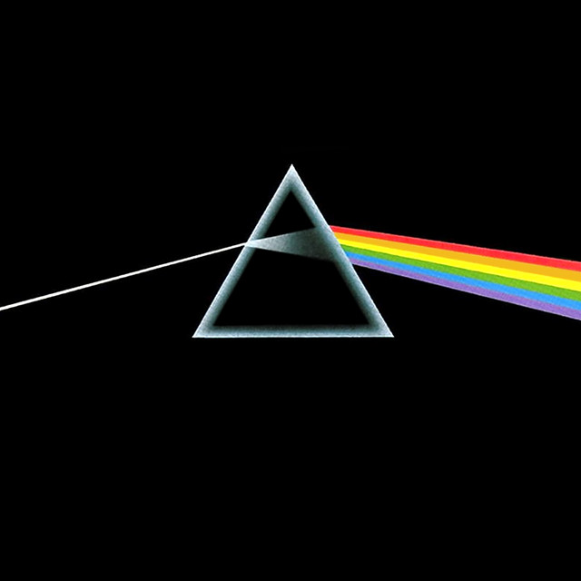
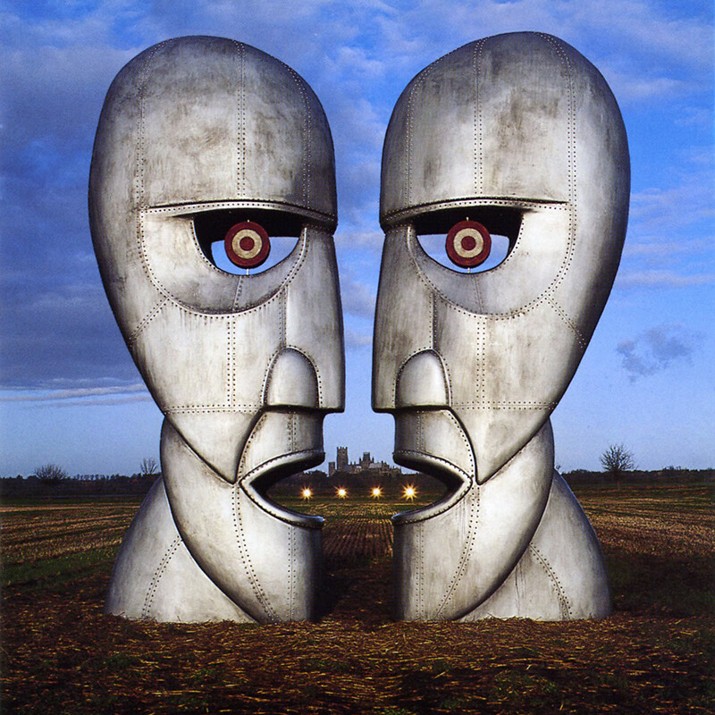
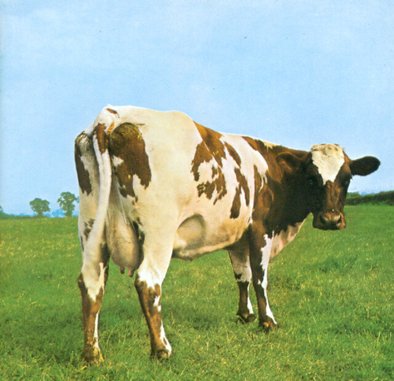
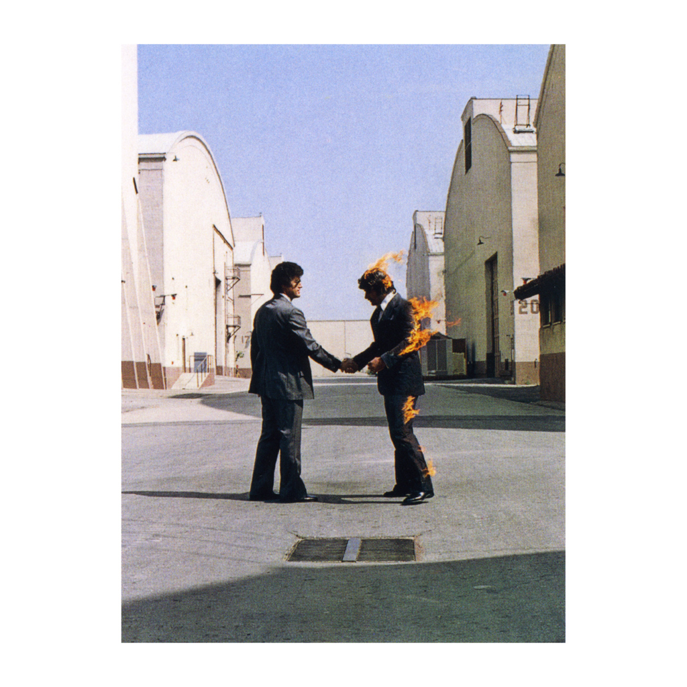

Not all of them, only some of their most popular albums

The Wall
The Dark Side Of The Moon
The Division Bell
Atom Heart Mother
Wish You Were Here
The album cover on Atom Heart Mother has literally no meaning at all, the designer drove out to a rural area and took a photo of the first cow he saw. The album is also the first one to not have any pictures of Pink Floyd or to feature the name.
Shine On You Crazy Diamond is dedicated to the late Syd Barrett, who left the band due to deteriorating mental health.
The band was named after two American Blues musicians: Pink Anderson and Floyd Council.
My favourite album is Atom Heart Mother, which was released in October 1970